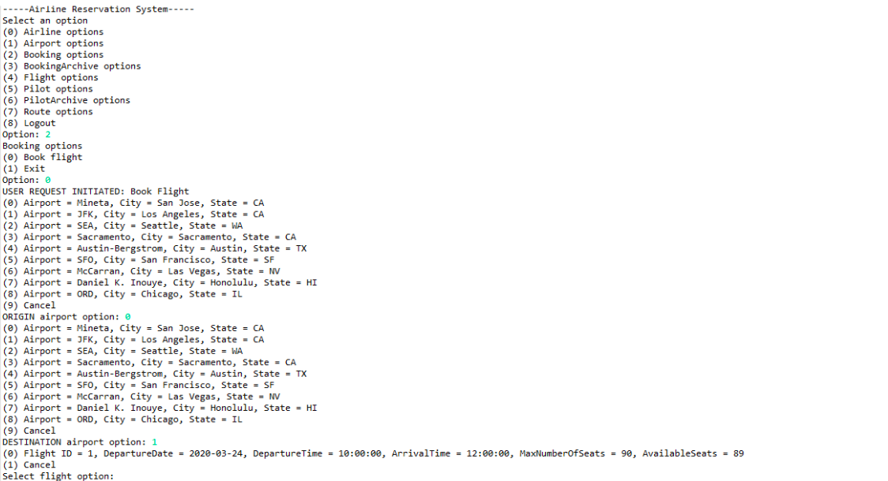

Airline Reservation System
- Coordinated with 2 software engineering students to design an airline reservation system utilizing Java and MySQL to allow users interact with the airline database that supports archiving.
- Supplemented the system with 16 procedures and 2 triggers along with 5 queries that involved 2-5 relations simultaneously using correlated subqueries, joins, and/or aggregation.
- Created a database such that its relations were in 3NF or BCNF to eliminate data redundancies.
- Wrote a detailed report that explains each relational dependency and how the database has been normalized.
Normalization Report
By having an ID as a primary key for each table, we were able to use it as a unique identifier for the rest of attributes that followed. When we query for tuples with those primary keys, we are given back unique tuples. Therefore, each relation with only one functional dependency is in BCNF.The Airport table has two functional dependencies; however, it is also in BCNF. Similar to our previous reasoning, when we use aiportID as a primary key, the rest of the attributes supply us with unique values which causes no redundancies. (City, state) functionally determines airportID and name. Typically, cities could have multiple airports, but in our database we decided to have (city, state) be a unique key. Thus, having (city, state) as a unique key functions similarly to a primary key where we are able to obtain airportID and name without redundancies.
The Flight table contains two functional dependencies, one of which follows our previous explanation. The second functional dependency shows that pilotID functionally determines flightID. This still follows BNCF rules because we have made the relation so that there is only one pilot per flight and that after that flight is done, we update the pilot with a new flight.
Lastly, the Route table has two functional dependencies that are in 3NF. Notice that routeID can have multiple airlines so routeID cannot functionally determine airlineID. Correspondingly, airlineID can have multiple routes that would create anomalies. RouteID can only functionally determine originAirportID and destinationAirportID because it is equivalent to an origin city and destination city. Likewise, an origin and destination can determine which route to take. If we were to decompose the relation to check whether it is in 3NF or not, we first find the candidate keys. Here, the candidate keys are (airlineID routeID) and (airlineID originAirportID destinationAirportID). We then check this with our functional dependencies and because originAirportID, destinationAirportID, and routeID are a part of the candidate keys, we can conclude that our relation is in 3NF.